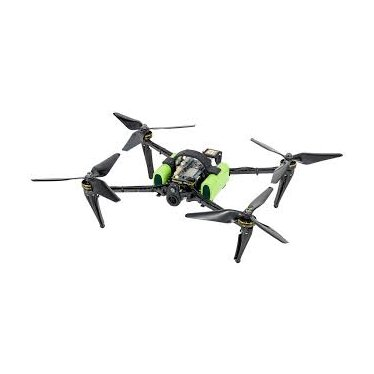
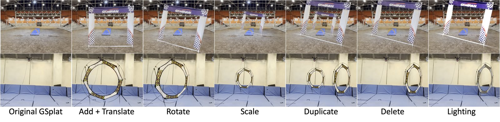
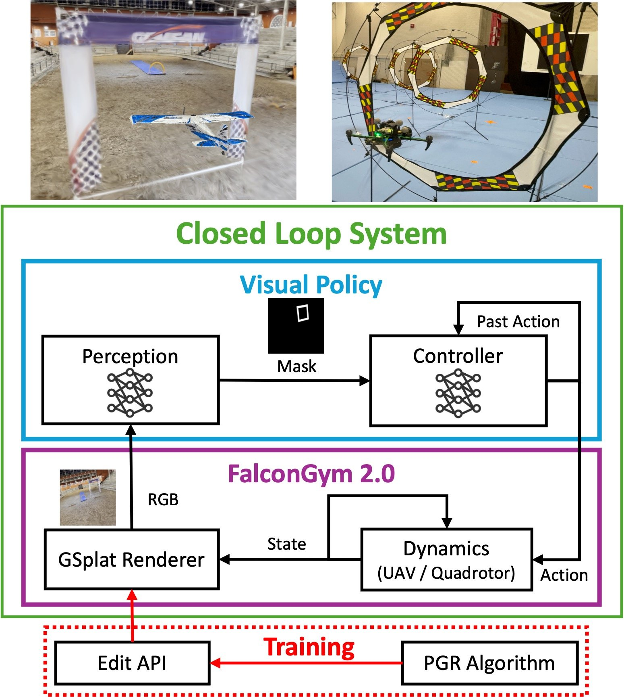
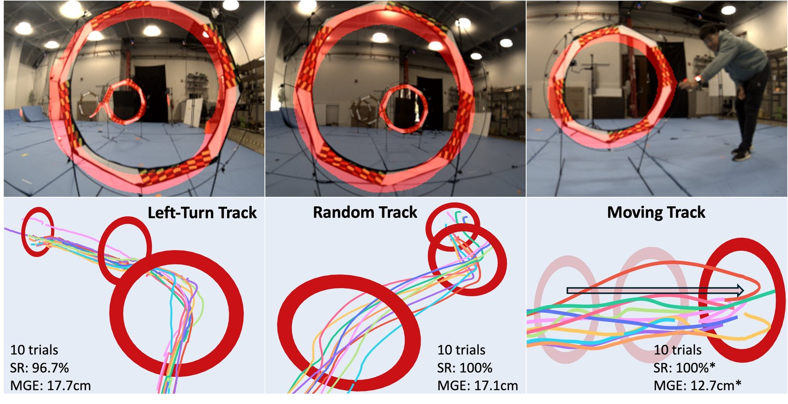
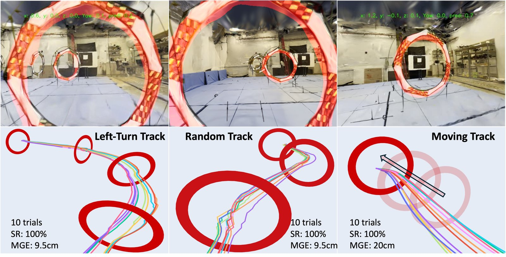
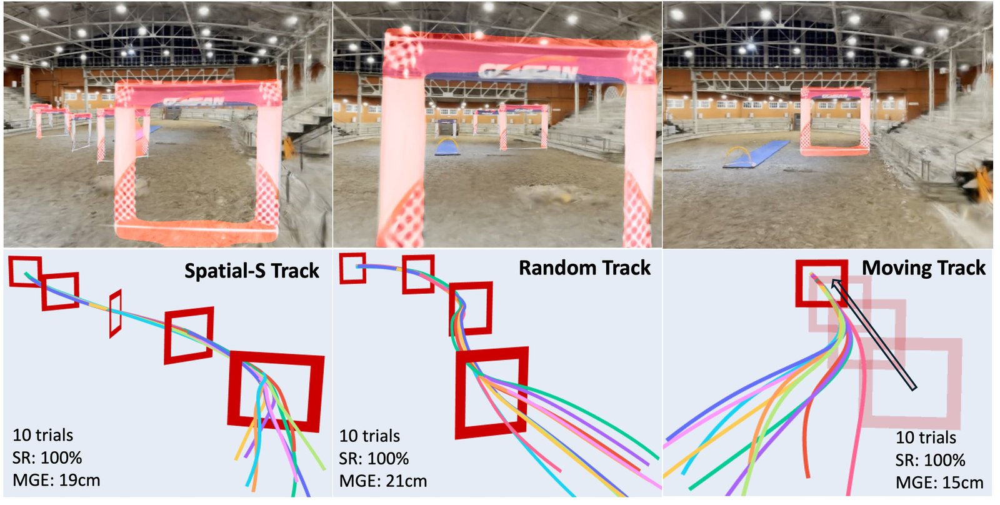
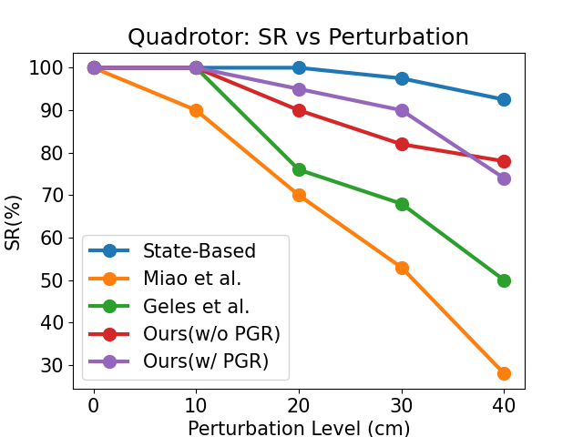
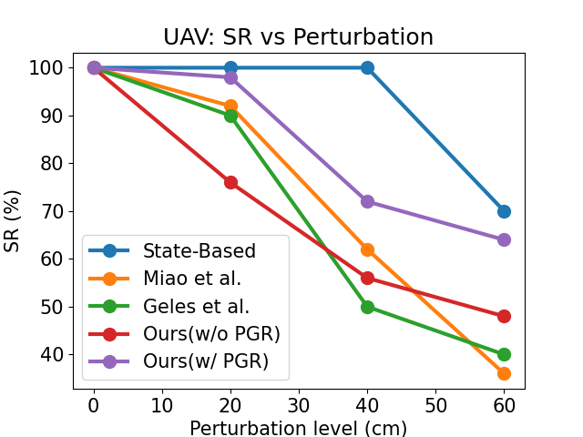

An Edit API rewrites the Gaussian-splat scene in milliseconds, and a refinement loop spends every render where the policy is weakest.

Hardware trials on a quadrotor; fixed-wing and quadrotor case studies in the editable twin.
Visual policy design is crucial for aerial navigation. However, state-of-the-art visual policies often overfit to a single track and their performance degrades when track geometry changes. We develop FalconGym 2.0, a photorealistic simulation framework built on Gaussian Splatting (GSplat) with an Edit API that programmatically generates diverse static and dynamic tracks in milliseconds.
Leveraging FalconGym 2.0's editability, we propose a Performance-Guided Refinement (PGR) algorithm, which concentrates visual-policy training on challenging tracks while iteratively improving performance. Across two case studies (fixed-wing UAVs and quadrotors) with distinct dynamics and environments, we show that a single visual policy trained with PGR in FalconGym 2.0 outperforms state-of-the-art baselines in generalization and robustness: it generalizes to three unseen tracks with 100% success without per-track retraining and maintains higher success rates under gate-pose perturbations.
Finally, we demonstrate zero-shot sim-to-real transfer of the PGR-trained visual policy to quadrotor hardware, achieving a 98.6% success rate (69/70 gates) over 30 trials across two three-gate tracks and one moving-gate track.

The Edit API: programmatic add / delete / translate / rotate / scale / duplicate of scene Gaussians, generating new tracks in milliseconds.

FalconGym 2.0 closed-loop training and evaluation pipeline with Performance-Guided Refinement.





@inproceedings{MiaoEtAl:ICRA26,
title = {Performance-Guided Refinement for Visual Aerial Navigation using Editable Gaussian Splatting in FalconGym 2.0},
author = {Miao, Yan and Yuceel, Ege and Fainekos, Georgios and Hoxha, Bardh and Okamoto, Hideki and Mitra, Sayan},
booktitle = {Proceedings of IEEE International Conference on Robotics and Automation (ICRA)},
year = {2026}
}